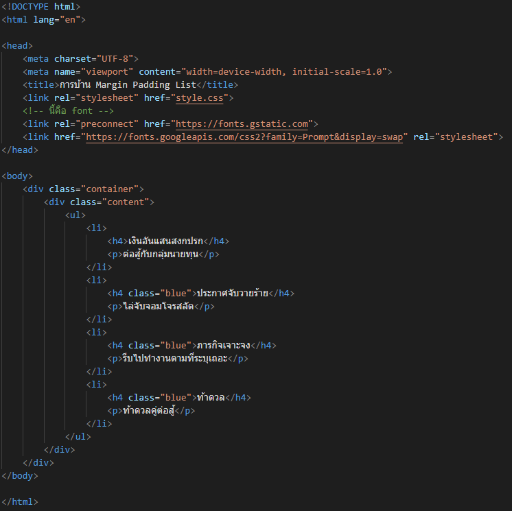
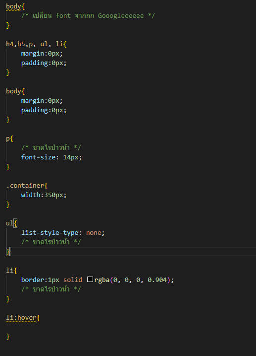
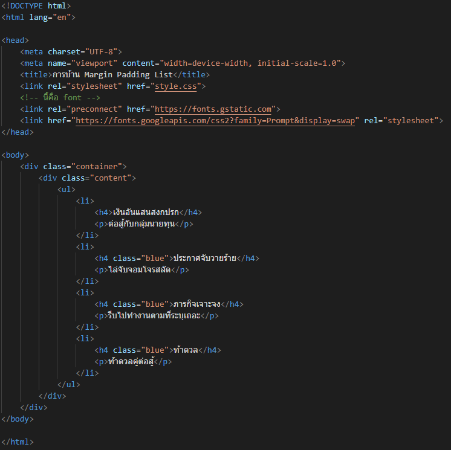
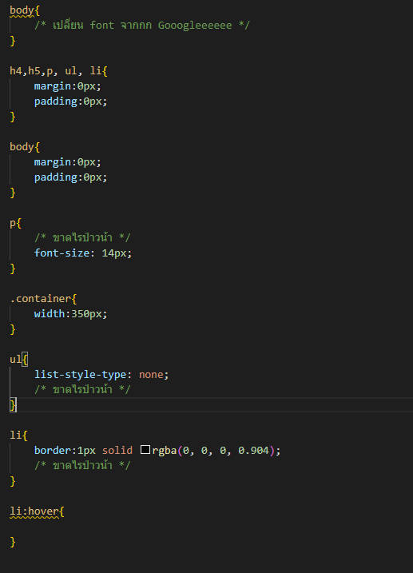

1. การเขียน HTML (100%)
2. การเขียน CSS ช่วยแค่ (20%)
ต่อสู้กับกลุ่มนายทุน
ไล่จับจอมโจรสลัด
รีบไปทำงานตามที่ระบุเถอะ
ท้าดวลคู่ต่อสู้
1. การเขียน HTML (100%)
2. การเขียน CSS ช่วยแค่ (20%)
1. ฝึกการใช้ ul li
2. ฝึกการเรียกใช้ class
3. ฝึกการเรียกใช้ font จากภายนอก
4. ฝึกใช้เพื่อจะแยกแยะ margin กับ padding ให้เก่งมากขึ้น